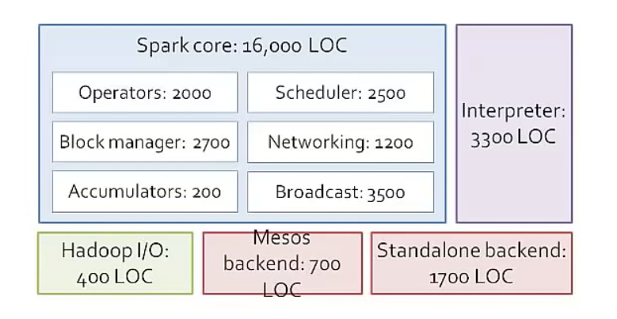

{{appName}}
What is Apache Spark?
- Distributed General Purpose, Lightning-fast Cluster Computing Framework with:
- In-Memory data processing engine
- ETL
- SQL and Dataframes
- Analytics
- Machine Learning (MLlib)
- Graph Processing on large data
- At Rest (batch)
- In Motion (streaming)

Runs Everywhere
- Hadoop Yarn
- Apache Mesos
- Standalone Cluster Mode
- Cloud
- EC2
Access Diverse Data Source including:
- HDFS
- Cassnadra
- HBase
- Hive
- Tachyon
- S3
Ease of Use, Apps can be written in
- Has 80 high-level operators that makes to build parallel apps easy using:
- Java
- Scala
- Python
- R
PI calculation sample code
$ cat pi.scala
val NUM_SAMPLES = 100000
val count = sc.parallelize(1 to NUM_SAMPLES).filter { _ =>
val x = math.random
val y = math.random
x*x + y*y < 1
}.count()
println(s"Pi is roughly ${4.0 * count / NUM_SAMPLES}")
// running:
scala> :load pi.scala
Loading pi.scala...
NUM_SAMPLES: Int = 100000
count: Long = 78560
Pi is roughly 3.1424
File chars length example
scala> val textFile = sc.textFile("/Users/mchinnappan/text-docs/t8.shakespeare.txt")
textFile: org.apache.spark.rdd.RDD[String] = /Users/mchinnappan/text-docs/t8.shakespeare.txt MapPartitionsRDD[16] at textFile at :24
scala> val lineLengths = textFile.map(s => s.length)
lineLengths: org.apache.spark.rdd.RDD[Int] = MapPartitionsRDD[17] at map at :26
scala> val totalLength = lineLengths.reduce(_ + _)
totalLength: Int = 5333743
Spark Dataframe
scala> import org.apache.spark.sql.SparkSession
import org.apache.spark.sql.SparkSession
scala> val spark = SparkSession.builder().appName("Spark SQL").getOrCreate()
18/02/06 14:55:07 WARN SparkSession$Builder: Using an existing SparkSession; some configuration may not take effect.
spark: org.apache.spark.sql.SparkSession = org.apache.spark.sql.SparkSession@1a1c308b
scala> import spark.implicits._
import spark.implicits._
scala> val df = spark.read.json("/Users/mchinnappan/text-docs/people.json")
df: org.apache.spark.sql.DataFrame = [age: bigint, name: string]
scala> df.show()
+---+--------------+
|age| name|
+---+--------------+
| 76| Ken Thompson|
| 76|Dennis Ritchie|
| 62| James Gosling|
| 83| Niklaus Wirth|
| 63| Bill Joy|
+---+--------------+
Spark Dataframe - Contd.
scala> df.printSchema()
root
|-- age: long (nullable = true)
|-- name: string (nullable = true)
scala> df.select("name").show()
+--------------+
| name|
+--------------+
| Ken Thompson|
|Dennis Ritchie|
| James Gosling|
| Niklaus Wirth|
| Bill Joy|
+--------------+
Spark Dataframe - Contd.
scala> // Select everybody, but increment the age by 1 scala> df.select($"name", $"age" + 1).show() +--------------+---------+ | name|(age + 1)| +--------------+---------+ | Ken Thompson| 77| |Dennis Ritchie| 77| | James Gosling| 63| | Niklaus Wirth| 84| | Bill Joy| 64| +--------------+---------+ scala> // Select people older than 70 scala> df.filter($"age" > 70).show() +---+--------------+ |age| name| +---+--------------+ | 76| Ken Thompson| | 76|Dennis Ritchie| | 83| Niklaus Wirth| +---+--------------+
Spark Dataframe - Contd.
scala> // Count people by age
scala> df.groupBy("age").count().show()
+---+-----+
|age|count|
+---+-----+
| 63| 1|
| 83| 1|
| 62| 1|
| 76| 2|
+---+-----+
SQL Query
scala> // Register the DataFrame as a SQL temporary view
scala> df.createOrReplaceTempView("people")
scala> val sqlDF = spark.sql("SELECT * FROM people")
sqlDF: org.apache.spark.sql.DataFrame = [age: bigint, name: string]
scala> sqlDF.show()
+---+--------------+
|age| name|
+---+--------------+
| 76| Ken Thompson|
| 76|Dennis Ritchie|
| 62| James Gosling|
| 83| Niklaus Wirth|
| 63| Bill Joy|
+---+--------------+
Datasets
scala> case class Person(name: String, age: Long)
defined class Person
scala> val caseClassDS = Seq(Person("Ken Thompson", 76)).toDS()
caseClassDS: org.apache.spark.sql.Dataset[Person] = [name: string, age: bigint]
scala> caseClassDS.show()
+------------+---+
| name|age|
+------------+---+
|Ken Thompson| 76|
+------------+---+
Datasets - contd.
scala> val jsonPath = "/Users/mchinnappan/text-docs/people.json" jsonPath: String = /Users/mchinnappan/text-docs/people.json scala> val peopleDS = spark.read.json(jsonPath).as[Person] peopleDS: org.apache.spark.sql.Dataset[Person] = [age: bigint, name: string] scala> peopleDS.show() +---+--------------+ |age| name| +---+--------------+ | 76| Ken Thompson| | 76|Dennis Ritchie| | 62| James Gosling| | 83| Niklaus Wirth| | 63| Bill Joy| +---+--------------+
RDD to Dataframe
val peopleDF = spark.sparkContext.textFile("/Users/mchinnappan/text-docs/people.txt")
.map(_.split(","))
.map(attributes => Person(attributes(0), attributes(1).trim.toInt))
.toDF()
peopleDF: org.apache.spark.sql.DataFrame = [name: string, age: bigint]
scala> peopleDF.show()
+--------------+---+
| name|age|
+--------------+---+
| Ken Thompson| 76|
|Dennis Ritchie| 76|
| James Gosling| 62|
| Niklaus Wirth| 83|
| Bill Joy| 63|
+--------------+---+
RDD to Dataframe - SQL
scala> peopleDF.createOrReplaceTempView("people2")
scala> var seventyPlusDF = spark.sql("SELECT name,age FROM people2 WHERE age BETWEEN 70 AND 90")
seventyPlusDF: org.apache.spark.sql.DataFrame = [name: string, age: bigint]
scala> seventyPlusDF.show()
+--------------+---+
| name|age|
+--------------+---+
| Ken Thompson| 76|
|Dennis Ritchie| 76|
| Niklaus Wirth| 83|
+--------------+---+
Parquet Data resource
scala> val usersDF = spark.read.load("/Users/mchinnappan/text-docs/users.parquet")
usersDF: org.apache.spark.sql.DataFrame = [name: string, favorite_color: string ... 1 more field]
scala> usersDF.show()
+------+--------------+----------------+
| name|favorite_color|favorite_numbers|
+------+--------------+----------------+
|Alyssa| null| [3, 9, 15, 20]|
| Ben| red| []|
+------+--------------+----------------+
scala> usersDF.createOrReplaceTempView("users")
scala> val uDF = spark.sql("SELECT * FROM users")
uDF: org.apache.spark.sql.DataFrame = [name: string, favorite_color: string ... 1 more field]
scala> uDF.show()
+------+--------------+----------------+
| name|favorite_color|favorite_numbers|
+------+--------------+----------------+
|Alyssa| null| [3, 9, 15, 20]|
| Ben| red| []|
+------+--------------+----------------+
scala> usersDF.select("name", "favorite_color").show()
+------+--------------+
| name|favorite_color|
+------+--------------+
|Alyssa| null|
| Ben| red|
+------+--------------+
Wirting a Dataframe in to Parquet
// Parquet is a columnar format that is supported by many other data processing systems.
val peopleDF = spark.read.format("json")
.load("/Users/mchinnappan/text-docs/people.json")
peopleDF.select("name", "age")
.write.format("parquet")
.save("name_and_age.parquet")
$ tree name_and_age.parquet/
name_and_age.parquet/
├── _SUCCESS
└── part-00000-1a7c7e94-95c4-44ae-895a-b7711c510a30-c000.snappy.parquet
0 directories, 2 files
Run SQL on files directly
scala> val sqlUsersDF = spark.sql("SELECT * FROM parquet.`/Users/mchinnappan/text-docs/name_and_age.parquet`")
18/02/06 16:26:04 WARN ObjectStore: Failed to get database parquet, returning NoSuchObjectException
sqlUsersDF: org.apache.spark.sql.DataFrame = [name: string, age: bigint]
scala> sqlUsersDF.show()
+--------------+---+
| name|age|
+--------------+---+
| Ken Thompson| 76|
|Dennis Ritchie| 76|
| James Gosling| 62|
| Niklaus Wirth| 83|
| Bill Joy| 63|
+--------------+---+
Run SQL on files directly - Contd.
scala> val sqlPeopleJsonDF = spark.sql("SELECT * FROM json.`/Users/mchinnappan/text-docs/people.json`")
18/02/06 16:28:12 WARN ObjectStore: Failed to get database json, returning NoSuchObjectException
sqlPeopleJsonDF: org.apache.spark.sql.DataFrame = [age: bigint, name: string]
scala> sqlPeopleJsonDF.show()
+---+--------------+
|age| name|
+---+--------------+
| 76| Ken Thompson|
| 76|Dennis Ritchie|
| 62| James Gosling|
| 83| Niklaus Wirth|
| 63| Bill Joy|
+---+--------------+
DataFrames with createDataset
// A DataFrame can be created for a JSON dataset represented by
// a Dataset[String] storing one JSON object per string
scala> val otherPeopleDataset = spark.createDataset(
| """{"name":"Mohan Chinnappan","address":{"city":"New Found City","state":"NH"}}""" :: Nil)
otherPeopleDataset: org.apache.spark.sql.Dataset[String] = [value: string]
scala> val otherPeople = spark.read.json(otherPeopleDataset)
otherPeople: org.apache.spark.sql.DataFrame = [address: struct, name: string]
scala> otherPeople.show()
+-------------------+----------------+
| address| name|
+-------------------+----------------+
|[New Found City,NH]|Mohan Chinnappan|
+-------------------+----------------+
Bucketing, Sorting and Partitioning
scala> usersDF.show()
+------+--------------+----------------+
| name|favorite_color|favorite_numbers|
+------+--------------+----------------+
|Alyssa| null| [3, 9, 15, 20]|
| Ben| red| []|
+------+--------------+----------------+
scala> usersDF.write.partitionBy("favorite_color").saveAsTable("people_partitioned")
$ tree spark-warehouse/
spark-warehouse/
└── people_partitioned
├── _SUCCESS
├── favorite_color=__HIVE_DEFAULT_PARTITION__
│ └── part-00000-e6dadc4f-24b6-4bee-b764-8bbc7ac2053e.c000.snappy.parquet
└── favorite_color=red
└── part-00000-e6dadc4f-24b6-4bee-b764-8bbc7ac2053e.c000.snappy.parquet
Bucketing, Sorting and Partitioning - contd.
scala> val numBuckets = 10
numBuckets: Int = 10
scala> usersDF.write.partitionBy("favorite_color")
.bucketBy(numBuckets, "name")
.saveAsTable("people_partitioned_bucketed")
18/02/06 16:46:31 WARN HiveExternalCatalog: Persisting bucketed data source table `default`.`people_partitioned_bucketed` into Hive metastore in Spark SQL specific format, which is NOT compatible with Hive.
$ tree spark-warehouse/
spark-warehouse/
├── people_partitioned
│ ├── _SUCCESS
│ ├── favorite_color=__HIVE_DEFAULT_PARTITION__
│ │ └── part-00000-e6dadc4f-24b6-4bee-b764-8bbc7ac2053e.c000.snappy.parquet
│ └── favorite_color=red
│ └── part-00000-e6dadc4f-24b6-4bee-b764-8bbc7ac2053e.c000.snappy.parquet
└── people_partitioned_bucketed
├── _SUCCESS
├── favorite_color=__HIVE_DEFAULT_PARTITION__
│ └── part-00000-d9ec5ec3-98ea-4bb6-90ed-e370c22fba3e_00004.c000.snappy.parquet
└── favorite_color=red
└── part-00000-d9ec5ec3-98ea-4bb6-90ed-e370c22fba3e_00008.c000.snappy.parquet
Bucketing, Sorting and Partitioning - contd.
scala> usersDF.write
.partitionBy("favorite_color")
.bucketBy(numBuckets, "name")
.sortBy("favorite_numbers")
.saveAsTable("people_partitioned_bucketed_sorted")
18/02/06 16:53:20 WARN HiveExternalCatalog: Persisting bucketed data source table `default`.`people_partitioned_bucketed_sorted` into Hive metastore in Spark SQL specific format, which is NOT compatible with Hive.
$ tree spark-warehouse/
spark-warehouse/
└── people_partitioned_bucketed_sorted
├── _SUCCESS
├── favorite_color=__HIVE_DEFAULT_PARTITION__
│ └── part-00000-4d811338-dda7-48ff-882d-cd4dbbf44205_00004.c000.snappy.parquet
└── favorite_color=red
└── part-00000-4d811338-dda7-48ff-882d-cd4dbbf44205_00008.c000.snappy.parque
Schema Merging
// Create a simple DataFrame, store into a partition directory
val squaresDF = spark.sparkContext.makeRDD(1 to 5).map(i => (i, i * i)).toDF("value", "square")
squaresDF.write.parquet("data/test_table/key=1")
scala> squaresDF.show()
+-----+------+
|value|square|
+-----+------+
| 1| 1|
| 2| 4|
| 3| 9|
| 4| 16|
| 5| 25|
+-----+------+
// Create another DataFrame in a new partition directory,
// adding a new column and dropping an existing column
val cubesDF = spark.sparkContext.makeRDD(6 to 10).map(i => (i, i * i * i)).toDF("value", "cube")
cubesDF.write.parquet("data/test_table/key=2")
scala> cubesDF.show()
+-----+----+
|value|cube|
+-----+----+
| 6| 216|
| 7| 343|
| 8| 512|
| 9| 729|
| 10|1000|
+-----+----+
Schema Merging - contd.
scala> // Read the partitioned table
scala> val mergedDF = spark.read.option("mergeSchema", "true").parquet("data/test_table")
mergedDF: org.apache.spark.sql.DataFrame = [value: int, square: int ... 2 more fields]
// The final schema consists of all 3 columns in the Parquet files together
// with the partitioning column appeared in the partition directory paths root
scala> mergedDF.printSchema()
root
|-- value: integer (nullable = true)
|-- square: integer (nullable = true)
|-- cube: integer (nullable = true)
|-- key: integer (nullable = true)
Schema Merging - contd.
$ tree data
data
└── test_table
├── key=1
│ ├── _SUCCESS
│ ├── part-00000-1a8f3060-7618-472c-80f3-b0c815201fe1-c000.snappy.parquet
│ ├── part-00001-1a8f3060-7618-472c-80f3-b0c815201fe1-c000.snappy.parquet
│ ├── part-00002-1a8f3060-7618-472c-80f3-b0c815201fe1-c000.snappy.parquet
│ ├── part-00003-1a8f3060-7618-472c-80f3-b0c815201fe1-c000.snappy.parquet
│ ├── part-00004-1a8f3060-7618-472c-80f3-b0c815201fe1-c000.snappy.parquet
│ ├── part-00005-1a8f3060-7618-472c-80f3-b0c815201fe1-c000.snappy.parquet
│ ├── part-00006-1a8f3060-7618-472c-80f3-b0c815201fe1-c000.snappy.parquet
│ └── part-00007-1a8f3060-7618-472c-80f3-b0c815201fe1-c000.snappy.parquet
└── key=2
├── _SUCCESS
├── part-00000-bc60e4d1-e390-4aba-83a5-8aad324b73f7-c000.snappy.parquet
├── part-00001-bc60e4d1-e390-4aba-83a5-8aad324b73f7-c000.snappy.parquet
├── part-00002-bc60e4d1-e390-4aba-83a5-8aad324b73f7-c000.snappy.parquet
├── part-00003-bc60e4d1-e390-4aba-83a5-8aad324b73f7-c000.snappy.parquet
├── part-00004-bc60e4d1-e390-4aba-83a5-8aad324b73f7-c000.snappy.parquet
├── part-00005-bc60e4d1-e390-4aba-83a5-8aad324b73f7-c000.snappy.parquet
├── part-00006-bc60e4d1-e390-4aba-83a5-8aad324b73f7-c000.snappy.parquet
└── part-00007-bc60e4d1-e390-4aba-83a5-8aad324b73f7-c000.snappy.parquet
DataFrame using JDBC
// start the shell
// $ spark-shell --driver-class-path postgresql-9.4-1201-jdbc41.jar --jars postgresql-9.4-1201-jdbc41.jar
scala> var jdbcDF = spark.read.format("jdbc")
.option("url", "jdbc:postgresql:dbname")
.option("dbtable","zipcodes")
.option("user", "postgres")
.option("password","password-here")
.load()
jdbcDF: org.apache.spark.sql.DataFrame = [zipcode: string, city: string ... 3 more fields]
scala> jdbcDF.show()
+-------+------------------+-----+--------+---------+
|zipcode| city|state|latitude|longitude|
+-------+------------------+-----+--------+---------+
| 00705| AIBONITO| PR| 18.14| -66.26|
| 00610| ANASCO| PR| 18.28| -67.14|
| 00612| ARECIBO| PR| 18.45| -66.73|
| 00601| ADJUNTAS| PR| 18.16| -66.72|
| 00602| AGUADA| PR| 18.38| -67.18|
| 00603| AGUADILLA| PR| 18.43| -67.15|
| 00703| AGUAS BUENAS| PR| 18.25| -66.1|
| 00704| AGUIRRE| PR| 17.96| -66.22|
| 07675| WESTWOOD| NJ| 40.98| -74.03|
| 07677| WOODCLIFF LAKE| NJ| 41.02| -74.05|
| 07885| WHARTON| NJ| 40.89| -74.58|
| 07981| WHIPPANY| NJ| 40.82| -74.41|
| 07999| WHIPPANY| NJ| 40.82| -74.41|
DataFrame using JDBC - contd.
// db
dbname=# \d testtable
Table "public.testtable"
Column | Type | Modifiers
--------+------+-----------
name | text |
dbname=# table testtable; name
----------
testname
(1 row)
scala> import java.util.Properties
import java.util.Properties
scala> val connectionProperties = new Properties()
connectionProperties: java.util.Properties = {}
scala> connectionProperties.put("user", "postgres")
res4: Object = null
scala> connectionProperties.put("password", "pwd")
res5: Object = null
scala> val jdbcDF2 = spark.read
.jdbc("jdbc:postgresql:dbname", "testtable", connectionProperties)
jdbcDF2: org.apache.spark.sql.DataFrame = [name: string]
scala> jdbcDF2.show()
+--------+
| name|
+--------+
|testname|
+--------+
Pivot
var df = spark.read.json("/tmp/farming/fruitStock.json")
df.show()
+----------+-------+---+
| date| fruit| id|
+----------+-------+---+
|2018-01-01| Apple| 1f|
|2018-01-02| Apple| 2f|
|2018-02-01| Pear| 3f|
|2018-03-01| Mango| 4f|
|2018-04-01| Pear| 5f|
|2018-05-01|Apricot| 6f|
|2018-06-01| Peach| 7f|
|2018-06-01| Apple| 8f|
+----------+-------+---+
scala> val result = df.withColumn("date", date_format(col("date"), "MMM yyyy"))
.groupBy("fruit")
.pivot("date")
.agg(countDistinct("id").alias("count")).na.fill(0)
scala> result.show()
+-------+--------+--------+--------+--------+--------+--------+
| fruit|Apr 2018|Feb 2018|Jan 2018|Jun 2018|Mar 2018|May 2018|
+-------+--------+--------+--------+--------+--------+--------+
| Peach| 0| 0| 0| 1| 0| 0|
| Pear| 1| 1| 0| 0| 0| 0|
| Mango| 0| 0| 0| 0| 1| 0|
|Apricot| 0| 0| 0| 0| 0| 1|
| Apple| 0| 0| 2| 1| 0| 0|
+-------+--------+--------+--------+--------+--------+--------+
# ref: https://databricks.com/session/pivoting-data-with-sparksql
Pivot - contd.
val ratings_raw = sc.textFile("/Users/mchinnappan/farming/ml-1m/ratings.dat")
case class Rating(user:Int, movie:Int, rating: Int)
val ratings = ratings_raw.map(_.split("::").map(_.toInt)).map(r => Rating(r(0),r(1),r(2))).toDF
scala> ratings.show
+----+-----+------+
|user|movie|rating|
+----+-----+------+
| 1| 1193| 5|
| 1| 661| 3|
| 1| 914| 3|
| 1| 3408| 4|
| 1| 2355| 5|
| 1| 1197| 3|
| 1| 1287| 5|
| 1| 2804| 5|
| 1| 594| 4|
...
val users_raw = sc.textFile("/Users/mchinnappan/farming/ml-1m/users.dat")
case class User(user:Int, gender:String, age: Int)
val users = users_raw.map(_.split("::")).map( u => User(u(0).toInt, u(1), u(2)toInt)).toDF
scala> users.show
+----+------+---+
|user|gender|age|
+----+------+---+
| 1| F| 1|
| 2| M| 56|
| 3| M| 25|
| 4| M| 45|
| 5| M| 25|
| 6| F| 50|
...
Pivot - contd..
val sample_users = users.where( expr("gender = 'F' or ( rand() * 5 < 2)"))
scala> sample_users.groupBy("gender").count().show()
+------+-----+
|gender|count|
+------+-----+
| F| 1709|
| M| 1691|
# 100 most popular movies
scala> val popular = ratings.groupBy("movie").count().orderBy($"count".desc).limit(100)
scala> popular.show()
+-----+-----+
|movie|count|
+-----+-----+
| 2858| 3428|
| 260| 2991|
| 1196| 2990|
Pivot - contd...
Stack
val df = Seq(
("G",Some(4),2,None),
("H",None ,4,Some(5))
)
.toDF("A","X","Y", "Z")
df.show()
+---+----+---+----+
| A| X| Y| Z|
+---+----+---+----+
| G| 4| 2|null|
| H|null| 4| 5|
+---+----+---+----+
df.select($"A", expr("stack(3, 'X', X, 'Y', Y, 'Z', Z) as (B, C)"))
.where("C is not null").show
+---+---+---+
| A| B| C|
+---+---+---+
| G| X| 4|
| G| Y| 2|
| H| Y| 4|
| H| Z| 5|
+---+---+---+
# Ref: https://svds.com/pivoting-data-in-sparksql/
Structured Streaming

Structured Streaming - Programming Model

Structured Streaming - Example

Structured Streaming - Contd.
Modes
-
Complete Mode - The entire updated Result Table will be written to the external storage. It is up to the storage connector to decide how to handle writing of the entire table.
-
Append Mode - Only the new rows appended in the Result Table since the last trigger will be written to the external storage. This is applicable only on the queries where existing rows in the Result Table are not expected to change.
-
Update Mode - Only the rows that were updated in the Result Table since the last trigger will be written to the external storage (available since Spark 2.1.1). Note that this is different from the Complete Mode in that this mode only outputs the rows that have changed since the last trigger. If the query doesn’t contain aggregations, it will be equivalent to Append mode.
Spark Application
- Spark Application
- Driver Program
- Runs user's
mainfunction- Executes various parallel opertaions on a cluster
- Cluster has many nodes
- RDD (resilient distributed dataset) is a collections of elements partitioned across the nodes (so distributed) of the cluster
- Runs user's
- Driver Program

RDD (resilient distributed dataset)
- Created by starting with a file in the Hadoop file system or an existing Scala collection in the driver program, and transforming
- Users may also ask Spark to persist an RDD in memory, allowing it to be reused efficiently across parallel operations
- RDDs automatically recover from node failures (so resilient )
Shared Variables
- Shared Variables can be used in the parallel operations
- Default
- Spark runs a function in parallel as set-of-tasks on different nodes
- Spark ships a copy of each variable used in the function to each task
- If a variable needs to be shared across the tasks or between set-of-tasks and driver-program
- Two types of shared Variables
- Broadcast variables - to cache a value in memory on all nodes
- Accumulators - variables that are only added to - counters and sums
DataFrame and SparkSQL
- analyzing the query
- building up a plan
- comparing them
- finally executing it

Internals
Internals - contd
- Operators (map, join, filter, groupBy...)
- Block manager (simple key-value store acts as a cache)
- Accumulators
- Scheduler
- Networking (serialization, plugin hadoop serialization lib,...)
- Broadcast (Broadcast on cluster, BitTorrent, optional )
- Interpreter (Scala)
- Backends
- Hadoop I/O
- Mesos I/O
- Standalone Backend - has mini-cluster manager
Spark Components
Spark Components - contd.
- User program
- Create SparkContext
- Acts as client for Spark
- Also acts as master for the application. Spark has one master for the job
- Connects to the cluster and does the scheduling . If it crashes only your job is lost
- So there is no single Master which knows every applications
- Create RDD
- Apply operators (map, filter...)
- Create SparkContext
- RDD graph
- Scheduler - talks to workers via cluster manager
- DAG Scheduler
- Task Scheduler
- Block Tracker - tracks what is in memory or disk on each node
- Shuffle Tracker - coordinates shuffle operations like - GroupBy
Multiple Workers, each worker can talk to others via block manager, fetch blocks from each otherr
- Task Threads
- Block Manager (key-value store)
Example Job
RDD graph
RDD graph - contd.
- Graph of java objects (which depend on each other) is built when we perform operations (like map, filter, groupBy)
- In earlier diagram, file: and errors: are subclass of RDD
- RDD - stored in memory or disk in nodes - in our example, we are asking to store in memory
- We run at the partition-level
- Each dataset is composed of multiple parttions. Each partition may be sitting differnt nodes. Some partitions may be sitting on multiple machines (replication)
RDD graph - contd..
- System knows the partition details
- example: For filter operation, say 4 partitions are involved for the RDD getting filtered, filter is applied on each of these 4 partitions
- tasks launching:
- System tried to pipeline together as many operations possible
- In case: read the file, filter and do the count
- One task (as task1) will be lanuched to read partition-1, filter on it and return the count
- Another task (as task2) will be lanuched to read partition-2, filter on it and return the count
Data locality
- First Run: data not in cache, so use HadoopRDD's locality prefs (from HDFS)
- Second Run: FilteredRDD is in the cache, so use its locations(in memory)
- If something falls out of cache, go back to HDFS
schedulingProcess
Life a job in Spark
- Stage: set of tasks
- Earlier diagram shows 3 stages, each stage contains set of taks to do
- Boundary of a stage: where there is a shuffle. Example: We need to finish all the Map tasks before we start reduce tasks
References
Key terms
- RDD - Represents an immutable, partitioned collection of elements that can be operated on in parallel.
- RDD.scala